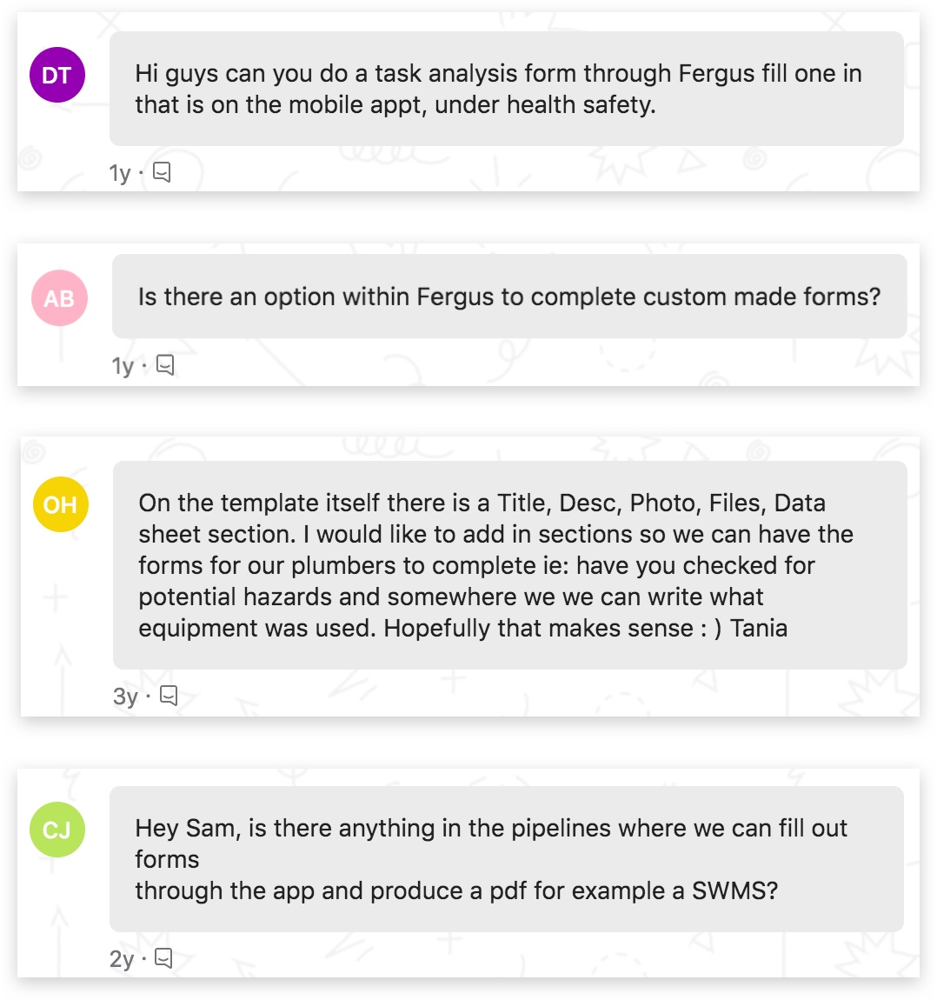
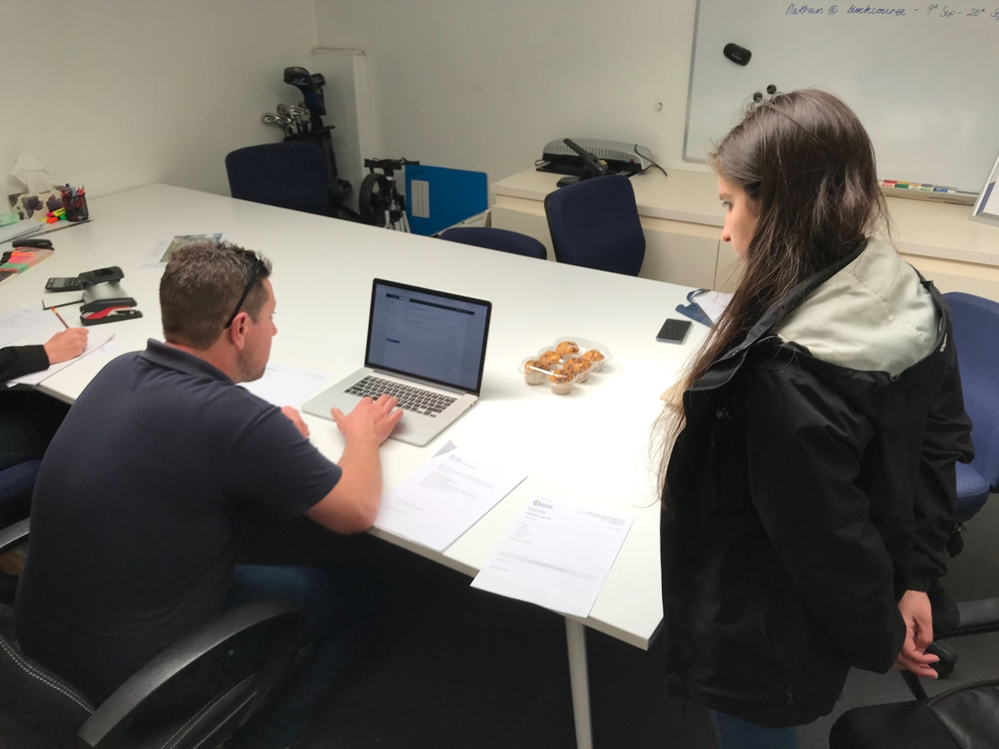

Forms
Trades businesses need to streamline the operational processes around their jobs and day to day operations. In order to achieve this, they need to ensure that their work is up to health and safety and compliance standards.
My position
UX Designer
UX Designer
Team
Product Manager
Product Design Lead
Five Developers
QA Professional
Product Manager
Product Design Lead
Five Developers
QA Professional
My role
Ideation
Wireframing
Visual Design
Interaction Design
User Research
Ideation
Wireframing
Visual Design
Interaction Design
User Research
Year
2019/20
2019/20
The context
This project is the second part of a bigger one (find out more on checklists). Let’s also clarify that Fergus is a job management software for trades companies.
As a brief introduction, forms and checklists were supposed to be the same project, but after many discussions it was decided that they are different features. Forms are meant to gather information to mainly ensure compliance and standardize processes. As opposed to checklists, which are destined to establish procedures to be replicated across the jobs.
The problem
Fergus customers requested a way to collect information and keep it in the system in the format of a form. They are asked to fill out governmental forms to ensure compliance with the established safety parameters in the work they do. On top of that, they are choosing Fergus to leave the paperwork behind by migrating to a cloud-based system. This means that they are looking for ways to replicate those physical documents in the software.

Users requesting forms
My role
I was involved in the project since the very beginning. I participated in the Design Sprint week and helped by wireframing and prototyping the vision of the feature. Furthermore, it was the first time I conducted usability testing sessions on my own.
Being a really complex functionality, my main task was to permanently provide feedback, design specs, and updated designs, based on our daily discussions, to the developers in charge. In the end, I helped during the testing period.
Believing in my idea
I really like it when projects are complicated. I always try to think about all the different scenarios and use cases, so I get deeply immersed in the project. And forms was one of those projects. Everything started around July 2019 while the checklist side of the initial project was being implemented.
The information gathered during the Design Sprint carried out at the end of March 2019 was enough for me to start designing. I mocked some ideas up in order to have a full picture of the potential feature. It took me a couple of days to think and refine these initial concepts until one day I came up with a really interesting thought: we need to use system tags.
Taking into account what customers are saying in interviews, a common pattern is that they want fewer clicks. This led me to think that they need a way to speed up the completion of the form, so we needed to provide them with an intelligent system. These tags' goal is to avoid typing those pieces of information that are associated with objects within the app every time you need them.
System tags behaviour
It was one of those ideas that you fall in love with, but because I was convinced that it was a super useful addition and we had to take the opportunity. As soon as I could, I explained the idea to the rest of the team and they agreed with me (yay!), it was going to be a helpful and time-saving functionality for our customers.
Iterations & User Research
Because forms are much more complex than checklists, we iterated over and over again. The first workflow that presented a complication was the template builder. We are working for not that tech-savvy customers, so we needed to provide a solution that considers their current mental models in order to cause the least possible impact. Something we learned was that users would tend to replicate the exact layout of their physical forms because they are used to them.
We were trying to find a balance between:
- Layout agnostic - A form that is going to be filled out in a mobile device, so it’s just one long scrollable column.
- Physical form layout - A form where you can arrange form elements around to save space in an A4 sheet.
Our first approach was considering these two facts together. The second was to split the creation of the form and the layout in two different tabs. Lastly, and which is the final solution, we went back and decided that there is definitely no division defined in the mental models of our users as there was for us. We had to understand that it is not necessary to try to be innovative but to be progressive in the change.
Our three approaches
To get to these insights, I conducted 4 usability testing sessions in person and remotely with customers. I also did 2 more sessions with internal employees so they can share their opinions based on what they know from their roles (an engineer and a sales rep). Once the solution was defined and everyone from the core team was happy about it, I presented it to the whole company on a Demo meeting.

Usability testing session
Development
After the template builder iterations, everything else was easier. Forms are attached to jobs when needed and assigned to employees to ensure they complete and submit them through the mobile app.
Forms on mobile
The last stage of the process consisted of supporting the developers by providing assets, detailed behaviors, component states and having interesting discussions around corner cases that arise during this time.
The release
Forms MVP is still being implemented. The first milestone is expected to be released in March 2020.
Takeaways
I think that one of the best things about this project was to include the company on the loop. By presenting prototypes and the testing results or the progress made by the engineers, gives the opportunity to obtain more feedback, new ideas, and better involvement.